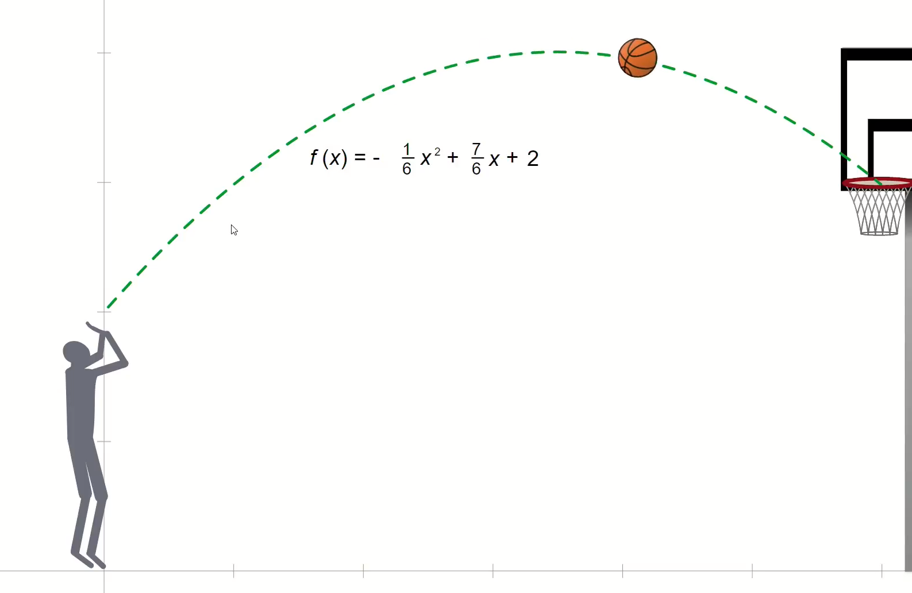
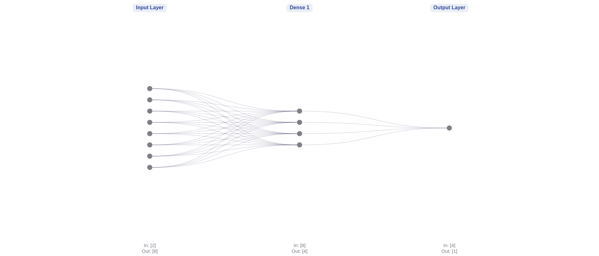
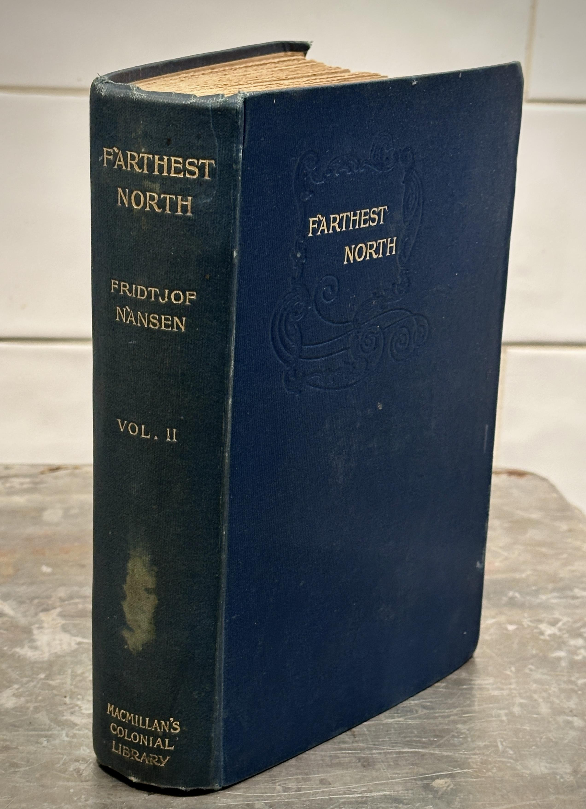
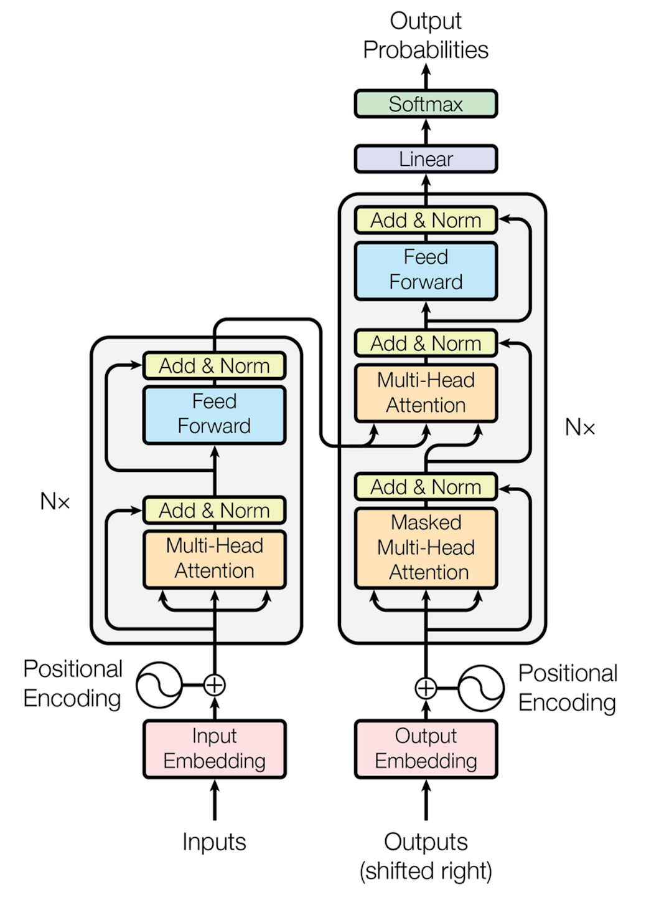
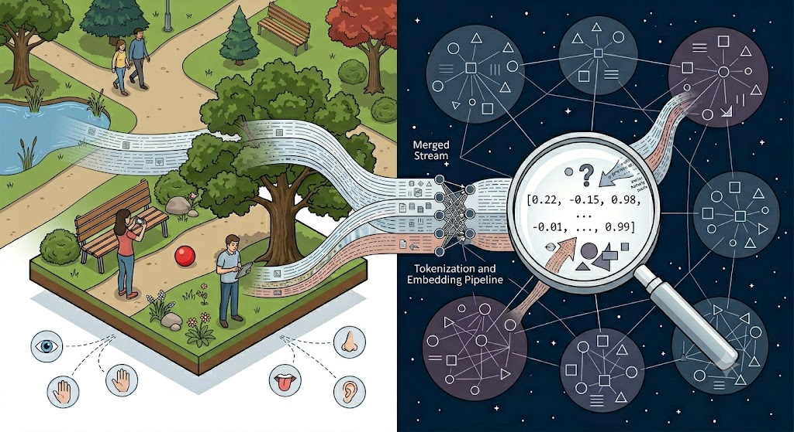

Sprachmodelle wie ChatGPT, Gemini oder Claude.
Systeme wie diese heißen Large Language Model oder kurz LLM.
Sprachmodelle dieser Art sind Grundlage vieler moderner KI-Systeme, sei es Bild- oder Audiogenerierung.
Und diese Muster spiegeln sich in Texten wider, weil manche Texte versuchen, die Wirklichkeit zu beschreiben.
Sonnenbahn über Concordia (75°S, Antarktis) über 24 Stunden an einem Polartag, 24 Aufnahmen im Stundenabstand, zusammengefügt zu einem Panorama.
Ein geworfener Ball folgt einer Parabel, ob er davon „weiß” oder nicht.

Eine vereinfachte Version des Architektur-Diagramms aus dem Paper „Attention Is All You Need”. Im Kern sind es nur ein paar Bausteine, die sich wiederholen.
Einige Bausteine habe ich weg gelassen, weil sie relevant für die Technik, aber nicht fürs intuitive Verständnis sind (z.B. Layer Normalization).
„Hamburg" + „Elbe" → 8420×
„Hamburg" + „Spree" → 45×
→ Häufigkeit filtert Fehler (hoffentlich) heraus.
Computer verstehen keine Wörter, nur Zahlen. Der Text wird in kleine Stücke (Tokens) zerlegt.
Diese können ganze Wörter sein, oder Bestandteile von Wörtern, aber auch Leerzeichen, Komma, Fragezeichen, Emojis usw.
Jedes Token wird durch einen Vektor ersetzt, der interpretierbar ist als seine Bedeutung:
Die konkreten Werte bringt der Computer sich selbstständig anhand von Trainingsdaten bei, indem er statistische Muster und Wortbeziehungen aus riesigen Textmengen lernt.
Die Bedeutung eines Wortes ist sein Gebrauch in der Sprache.
Da in verschiedenen Sprachen Worte mit ähnlicher Bedeutung oft in ähnlichen Konstellationen vorkommen, ergeben sich sogenannte Mannigfaltigkeiten: das sind Strukturen im Embedding-Raum, die durch ihre Anordnung untereinander eine Ähnlichkeit zueinander haben. Kennt man eine Mannigfaltigkeit, kann man durch Bewegung, Drehung und Verschiebung Übersetzungen finden.
Das bekommt man quasi „for free”, wenn man die Embeddings hat, einfach durch ihre Struktur. Dafür wurde die Transformer-Architektur auch erfunden: für Übersetzungen.
LLMs sind Maschinen, die das nächste Token vorhersagen. Aber immer nur ein einziges Token auf einmal.
Dieses Token wird an den Input angehängt und erneut eingegeben, bis ein spezielles |endoftext|-Token das Ende signalisiert.
Bei jedem Aufruf wird nur ein Token generiert! Es wird angehangen und wieder und wieder aufgerufen, bis |endoftext| kommt.
„Der Hund beißt den Mann” ≠ „Der Mann beißt den Hund”: gleiche Wörter, aber andere Reihenfolge und ganz andere Bedeutung!
Die Reihenfolge ist wichtig: sie wird in die Tokens selbst durch Positional Embedding kodiert, so dass jeder positionally embedded Tokenvektor beinhaltet, was es bedeutet und wo es steht.
Stell dir den Residual Stream als gemeinsames Notizbuch vor: Jede Schicht (Layer) ist ein anderer Experte, der den Text liest und seine Erkenntnisse dazuschreibt, ohne das Vorherige zu löschen.
„Welche anderen Wörter sind für dieses Token wichtig?”
Beispiel: „Ich bringe mein Geld auf die Bank”, worauf bezieht sich „Bank”, eine Parkbank oder die Bank zu der man Geld bringt?

Ein Feed-Forward-Netzwerk kann (mit genug Neuronen) jede stetige Funktion beliebig genau approximieren


Es gibt keine Tabelle und keine Zelle mit diesem Fakt. Das Wissen steckt verteilt in den Gewichten.
Nach allen Schichten nimmt das Modell den letzten Vektor, der einen Punkt beinhaltet, der interpretiert werden kann als Bedeutung des gesamten bisherigen Kontextes, und vergleicht es mit allen bekannten Tokens nach Ähnlichkeit, wobei ähnliche Vektoren einen geringeren Winkel zueinander haben als unähnliche.
Die Größe der Winkel wandelt man relativ zueinander in Prozentwerte um, um sie als (Pseudo-)Wahrheitscheinlichkeit zu interpretieren.
Top-K-Sampling: Man nimmt die Top-20 wahrscheinlichsten Worte, und wählt zufällig eines von ihnen aus, damit es natürlich wirkt.
Temperatur steuert wie kreativ das Netz sein soll.
Das Training eines LLM passiert in drei Phasen:
Nach dem Fine-Tuning gibt es oft noch eine dritte Phase: Menschen bewerten verschiedene Antworten des Modells („Antwort A ist besser als B"). Daraus lernt das Modell, welcher Stil bevorzugt wird, höflich, vorsichtig, hilfreich.
Auch das Beantworten einer Frage kostet Energie:
Nur eine Handvoll Firmen weltweit kann sich Training leisten: OpenAI, Google, Meta, Anthropic, DeepSeek, Mistral…
→ Diese wenigen Akteure entscheiden, welche Daten verwendet werden, welche Werte eingebaut werden, und wer Zugang bekommt.
LLM geben uns das Gefühl von Verständnis.
Aber sie hat keinen Körper. Keine Sinne. Kein Grounding.

Ein Lügner kennt die Wahrheit und versucht bewusst, dich davon wegzuführen, er hat eine Relation zur Wirklichkeit.
Ein Bullshitter hingegen kümmert sich überhaupt nicht darum, ob etwas wahr oder falsch ist, die Wahrheit ist ihm schlicht egal.
Ein LLM kann nicht lügen, denn es kennt keine Wahrheit. Aber es kann bullshitten: Es produziert Aussagen ohne jede Rücksicht darauf, ob sie stimmen, weil es gar keinen Begriff von „stimmen" hat.
Ein LLM ist kein Lexikon. Es speichert keine Fakten exakt, sondern lernt statistische Muster. Jede Antwort ist eine Annäherung, manchmal erstaunlich gut, manchmal subtil falsch.
Training braucht riesige Datenmengen → nur wenige Firmen können es sich leisten. Diese treffen immer eine Vorauswahl: Was wird aufgenommen? Was wird entfernt?
Beispiel: DeepSeek (China) weigert sich, über das Tiananmen-Massaker 1989 zu sprechen, nicht weil es das nicht „wüsste", sondern weil die Trainingsdaten politisch gefiltert wurden.
Wissen ist verteilt über Milliarden Gewichte gespeichert, nicht in lesbaren Zellen oder Tabellen. Es gibt keinen „Ort", an dem ein Bias sitzt.
→ Es ist extrem schwer, ohne Zugang zu den Trainingsdaten, dem Code und enormer Rechenleistung nachträglich herauszufinden, welche Biases ein Modell hat.
Niemand kann ein fertiges Modell „durchlesen" und sagen: „Hier steckt der politische Bias."
LLMs sind beeindruckend, aber es gibt fundamentale Grenzen, die nicht einfach durch „mehr Daten" verschwinden.
Ein LLM manipuliert Symbole nach Mustern, aber „versteht" es, wie Rot aussieht? Wie Kaffee riecht? Nein, dafür bräuchte es Grounding.
Sie kann ethische Argumente wiedergeben, aber sie hat keine Werte, kein Gewissen, keine Verantwortung. Auch dafür bräuchte es Grounding.
Sie kann Mitgefühl simulieren, aber da ist kein Subjekt, das wahrnimmt.
Nach dem Training ist das Modell „eingefroren". Es lernt nicht aus Gesprächen dazu.
Die offene Frage: Sind das Grenzen der aktuellen Architektur, oder Grenzen, die jede Maschine hat, die keinen Körper und keine Sinne besitzt? Darüber streiten Philosophen, Kognitionswissenschaftler und KI-Forscher bis heute.